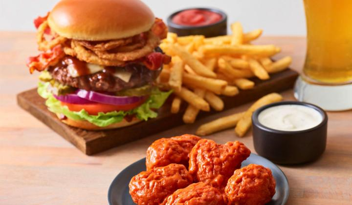

burger

a dish of Italian origin consisting of a flat,
round base of dough baked with a topping of tomato sauce and cheese,
typically with added meat or vegetables.
ingredients
- dough
- tomato
- souce
- Topping
Steps
- Take the flour an weigh off 300 grams using the weighing scale.
- Take the flour and add it to the bowl.
- Add the yeast, salt, and water to it.
- Start to knead the mixture.
- During this process add olive oil to the dough, until it gets smooth and a little moist.